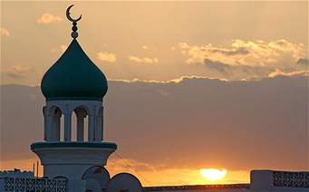

EL MUNDO ISLÁMICO
CONFLICTOS EN EL ORIENTE MEDIO
ATENTADOS TERRORISTAS EN EUROPA
El mundo islámico en el conjunto de los países musulmanes, que siguen el Islam como religión. Hay un total de 46 países de mayoría musulmana repartidos por África, Asia y Europa. La mayoría de los países alcanzaron su independencia después de la segunda guerra mundial. Algunos de los motivos por los que estos países se han envuelto en diferentes conflictos, después de su independencia no lograron establecer democracias y desarrollarse económicamente tanto como los occidentales.
Los musulmanes se dividieron al principio de su historia en dos vertientes: los suníes y los chiíes, viven sobre todo en Irán, Irak y pequeñas zonas como el sur del Líbano. La sociedad musulmana tiende a ser tradicional y machista. Tienen muy en cuenta la ley coránica, la sharia, con una serie de prohibiciones muy diferentes a las occidentales.
Sin embargo no hay que confundir al musulmán con el árabe, o con el persa, ya que hablamos de términos distintos. Aunque el centro del islamismo se concentre en el oriente medio, hay una importante presencia musulmana en el África y en Europa, debido a la migración.
En el mundo islámico actual, se culpa a todos los mulsumanes de los actos violetos que llevan a cabo un grupo de personas que manifiestan su religión de una forma muy radical y acabando con la vida de cualquier persona que no pertenezca a su religión o que no la respete.